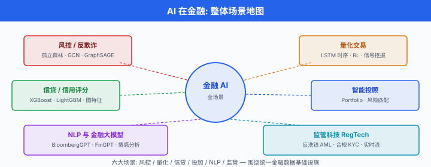

AI 在金融¶
一句话总结：金融是 AI 最早也最卷的落地场景，从时序预测、量化交易到风控反欺诈，全套 ML 工具都在这里被实战检验。
🗺️ 本章导览¶
- 本章覆盖应用 AI：金融 → 蛋白设计 → 药物发现 → 智能体系统 → 医疗
- 01. AI 在金融 (本节)：量化交易、风控、反欺诈
- 02. 蛋白质设计: AlphaFold、蛋白结构预测与设计
- 03. 药物发现：待补
- 04. 智能体系统：待补
- 05. 医疗健康：待补
金融数据看似杂乱：股价、订单、新闻、财报、社交媒体头像，万物皆可入模。 但金融也最残忍——任何策略哪怕 0.1% 的优势，在复利下都会被放大；任何延迟哪怕 1 毫秒，在 HFT 战场上都会被对手吃掉。 所以这一节里的"算法"不是 PyTorch 课设，而是真正在替人赚/亏钱的生产系统。 我们就按"预测 → 决策 → 风险 → 反欺诈 → NLP"的真实流水线把这一节过一遍.
1. 时序预测：从 ARIMA 到 Transformer¶
金融时间序列是 AI 落地的"老兵战场". 一只股票 1 秒钟可以出 100 笔报价，一年的数据动辄上亿 tick；而你只想回答一个朴素的问题——明天的收盘价是涨是跌? 围绕这个问题，业界用了 50 多年换了一代又一代模型。
1.1 经典三件套：ARIMA、指数平滑、Prophet¶
先说自回归积分滑动平均模型 (AutoRegressive Integrated Moving Average, ARIMA). 它由 Box 和 Jenkins 在 1970 年代系统化，核心思想是：把时间序列拆成"自回归 (AR) + 差分 (I) + 滑动平均 (MA)" 三段，用过去 \(p\) 步的值、过去 \(q\) 步的残差来回归出当前值。 实际表达式可以写成
其中 \(B\) 是滞后算子 (\(B y_t = y_{t-1}\)), \(\phi(B) = 1 - \phi_1 B - \dots - \phi_p B^p\), \(\theta(B) = 1 + \theta_1 B + \dots + \theta_q B^q\), \(\varepsilon_t\) 是白噪声。 训练时主要靠极大似然估计 (Maximum Likelihood Estimation, MLE) 把 \(\phi, \theta, \sigma^2\) 拟合出来。
ARIMA 的优势是可解释性强、统计性质清晰（有 Box-Jenkins 建模流程，ACF/PACF 选阶，单位根检验 ADF 等一整套工具箱). 但它的短板同样出名：只能处理单变量、线性、平稳序列，遇到波动率聚类、肥尾、跳跃这些金融特色就抓瞎。
指数平滑 (Exponential Smoothing, ES) 是另一条平行的简单流派，用指数衰减的权重对过去观测加权平均，又有 Holt-Winters 加上趋势项和季节项。 它计算便宜、适合低频数据，但本质上仍是"线性外推"，复杂模式学不来。
Prophet 是 Facebook (Meta) 在 2017 年开源的工具，由 Sean J. Taylor 和 Benjamin Letham 在论文《Forecasting at Scale》中提出。 它把时间序列拆成
其中 \(g(t)\) 是趋势项 (可用分段线性或 Logistic 增长), \(s(t)\) 是周期项 (用傅里叶级数), \(h(t)\) 是节假日效应，\(\varepsilon_t\) 是噪声。 Prophet 的卖点不是精度领先，而是让无统计背景的工程师能调好模型——基本上是给 ARIMA 打上一层"开箱即用"的封装。
1.2 神经网络打法：LSTM、TFT、PatchTST¶
从 2017 年开始，神经网络在金融时序上把"非线性 + 多变量 + 长记忆"三块短板一次补齐。 长短期记忆网络 (Long Short-Term Memory, LSTM) 通过输入门、遗忘门、输出门三重门控，解决了普通 RNN 的梯度消失问题。 Fischer 和 Krauss 在 2018 年的经典论文 Deep learning with long short-term memory networks for financial market predictions (European Journal of Operational Research, 2018) 里，用 LSTM 预测 S&P 500 成分股的方向，在 1992–2015 年回测中拿到了 0.46% 的日均收益和 5.8 的夏普比率，显著优于随机森林、深度神经网络和逻辑回归等"无记忆"基线。 不过作者也警告：2010 年之后超额收益明显衰减，暗示市场套利正在抹平这条 alpha.
但 LSTM 仍然贵、训练慢、梯度容易爆。 到了 2020 年前后，Transformer 系列的时序模型开始登场:
- 时序融合 Transformer (Temporal Fusion Transformer, TFT) 由 Bryan Lim、Sercan O. Arik、Nicolas Loeff、Tomas Pfister 在 2021 年的 International Journal of Forecasting 上提出 (arXiv:1912.09363). 它的贡献是多步预测 + 多变量 + 可解释：用 Variable Selection Networks 自动挑变量，用 Static Covariate Encoders 处理时不变特征，用 Quantile Output 给出预测区间，再用 Interpretable Multi-Head Attention 让人能看到每个时间步对每个变量的注意力。 这套组合拳让 TFT 在零售、电力、金融多个公开数据集上稳居当年 SOTA. 一个最小预测的 TFT 块大致可写为
其中的 Quantile loss 让模型直接学出区间，不再做高斯假设，对金融这种肥尾分布特别友好。
- PatchTST 是 Yuqi Nie, Nam H. Nguyen, Phanwadee Sinthong, Jayant Kalagnakam 在 ICLR 2023 上发表的工作 (arXiv:2211.14730). 标题 A Time Series is Worth 64 Words 一句话概括了核心思想：把一段时序切成若干固定长度的小 patch (常用 16 或 64)，把每个 patch 当作一个"词"送进 Transformer. 这种设计借鉴了 Vision Transformer (ViT) 对图像的处理方式，一举解决了原生 Transformer 在长时序预测上的两个痛点 (1) 注意力矩阵 \(O(L^2)\) 计算量爆炸；(2) 单点 token 噪声大，模型学不到局部结构。 PatchTST 在电力、天气、ET 等 7 个公开数据集上以不到 1/4 的参数量拿到了 state-of-the-art.
下面这段伪代码展示了一个最小 PatchTST 预测器的运行流程 (PyTorch 风格):
import torch
import torch.nn as nn
class PatchTST(nn.Module):
def __init__(self, n_channels, patch_len=16, stride=8, d_model=128, n_heads=4, horizon=96):
super().__init__()
self.patch_len = patch_len
self.stride = stride
# 1) 把 [B, L, C] 切成 [B, C, num_patches, patch_len]
self.patch_proj = nn.Linear(patch_len, d_model)
# 2) 编码器: 多头自注意力
encoder_layer = nn.TransformerEncoderLayer(
d_model=d_model, nhead=n_heads, dim_feedforward=256, batch_first=True
)
self.encoder = nn.TransformerEncoder(encoder_layer, num_layers=3)
# 3) 预测头: 把每个 patch 的表征 flatten, 回归到 horizon
self.head = nn.Linear(d_model * 32, horizon)
def forward(self, x):
# x: [B, L, C], 这里 L=512, C=单变量
x = x.transpose(1, 2) # [B, C, L]
# 切片成 patch
patches = x.unfold(2, self.patch_len, self.stride) # [B, C, num_patches, patch_len]
patches = self.patch_proj(patches) # [B, C, num_patches, d_model]
# 把 channel 维并到 batch 维 (channel-independent)
B, C, N, D = patches.shape
patches = patches.reshape(B * C, N, D)
z = self.encoder(patches) # [B*C, N, d_model]
z = z.reshape(B, C, -1) # [B, C, N*d_model]
y = self.head(z) # [B, C, horizon]
return y
# 训练: 用 MSE 或 Quantile loss, 优化器 Adam, lr=1e-3
model = PatchTST(n_channels=1, patch_len=16, stride=8, horizon=96)
opt = torch.optim.Adam(model.parameters(), lr=1e-3)
for x, y in dataloader: # y: [B, 96, 1]
pred = model(x)
loss = ((pred - y.squeeze(-1)) ** 2).mean()
opt.zero_grad(); loss.backward(); opt.step()
这里我们顺手做了一个常见魔法：channel-independent——把每个变量单独编码，不在 channel 维度上做 attention. 论文里说这反而比 channel-mixing 表现更稳，也少很多参数。 工业落地时，通常会用矩阵分解或协方差矩阵代替 attention，但对于学生来说，这版 PatchTST 足够了。
1.3 时序预测的几个"金融专属陷阱"¶
无论用 ARIMA 还是 Transformer，几个坑都躲不掉:
- 信噪比极低. 股价日收益的方差里，大约 80% 都来自日内噪声，真正可预测的"信号"微乎其微。 再深的模型，训练到后期只会去拟合噪声。
- 样本非平稳且分布漂移. 2020 年的 COVID、2022 年的加息，任何模型都"没见过"，训练-测试分布严重错位。
- 过拟合是常态. 金融数据看似海量，但独立样本数 = 交易日数 \(\approx\) 250/年，几十年也就 1 万多。 这跟 ImageNet 百万级没法比。
- 回测陷阱. 用同一段历史既做训练又做验证，会在结果里"水分" \(n\) 个百分点。 严格 walk-forward 检验 + 样本外测试不可省。
- 幸存者偏差 (Survivorship Bias). 数据源里如果只留了"今天还在交易" 的公司，相当于把过去 20 年退市 / 破产 / 私有化的失败案例全部剔除掉。 用这样一个 CRSP / Compustat 的"净版本"跑回测，年化收益可以被高估 1–4 个百分点 (Elton, Gruber, Blake 1996 在共同基金上验证过). 幸存者偏差同样在对冲基金数据库 (HFR、TASS) 里更严重——绩效差的基金一停止上报，就永远从数据库里消失。 严谨做法是使用含退市股 (delisted stocks) 的数据集，或至少对样本做 back-fill 检查。
把这五件事记在脑子里，再讨论"AI 是不是能预测股价"才不至于走火入魔。
2. 算法交易：信号、执行、微观结构¶
2.1 信号生成：从来到信号、到策略¶
时序预测给出"明天这只股票大概率涨"——这只是信号 (signal). 把它变成"今天下午 2 点 30 分用 100 万元按对手价买 5000 股" 还需要一整套交易流水线：仓位管理、订单拆分、撤单重发、风险检查……
一个最简化的"信号 → 订单"管线可以写成
其中 \(\sigma\) 是策略函数 (可以是线性回归、神经网络、强化学习策略)，输出未来期望收益 \(\mathbf{a}_t \in \mathbb{R}^n\) (n 只股票). 然后用 softmax 或简单归一化把它变成目标权重 \(\mathbf{w}_t\). 最后 \(V_t\) 是账户总价值，\(\mathbf{x}_t\) 就是这一时刻要发出/收回的股数。 这中间还会套一层 turnover penalty (换手惩罚) 和 leverage cap (杠杆上限)，避免模型一兴奋就满仓梭哈。
2.2 执行算法：TWAP 和 VWAP¶
真正下单时，你不会一次性"扫货 5000 股"——那会在订单簿上留下明显痕迹，推动价格向不利方向移动，俗称市场冲击 (market impact). 主流买方机构的做法是把"大单"拆成若干小单，均匀地撒在一段时间里。
时间加权平均价格 (Time-Weighted Average Price, TWAP) 是最简单的拆单方式：把总单量除以总时间，每个时间片断下等量小单。 公式一句话:
\(X\) 是总单量，\(K\) 是切片数，每片 \(X/K\) 股。 优点是简单可预测，缺点是它完全不管成交量节奏——开盘半小时市场最活跃，收盘前半小时清淡，它都用同一速率下单，容易在清淡时段暴露意图。
成交量加权平均价格 (Volume-Weighted Average Price, VWAP) 改进了一版：按预期成交量分布加权，让下单节奏跟市场同步。 公式是
其中 \(\hat{v}_k\) 是第 \(k\) 个时间窗的预测成交量。 VWAP 的常用基准是"用 VWAP 策略下单，实际成交均价比当天市场 VWAP 偏离多少 bps"，偏离越小说明执行越好。 这就是实盘里被反复提到的"VWAP slippage".
下面是一个用 pandas 模拟 VWAP 拆单的最小代码:
import numpy as np
import pandas as pd
def vwap_schedule(total_shares, adv_curve):
"""
total_shares: 需执行的总量
adv_curve: 一天 K 个时间窗的预计成交量占比 (和=1)
"""
adv_curve = np.asarray(adv_curve)
assert np.isclose(adv_curve.sum(), 1.0)
return np.round(total_shares * adv_curve).astype(int)
# 假设一天有 6 个 30 分钟窗口, 开盘/收盘活跃, 中午清淡
adv_curve = np.array([0.30, 0.20, 0.15, 0.10, 0.15, 0.10])
schedule = vwap_schedule(total_shares=10_000, adv_curve=adv_curve)
print("各时段下单股数:", schedule.tolist())
# 输出: [3000, 2000, 1500, 1000, 1500, 1000]
工业上还有 IS (Implementation Shortfall)、POV (Percentage of Volume)、Iceberg、Snipe 等数十种执行算法，核心都是"既快又便宜地吃掉想要的头寸，又不被人察觉". 这一块，学术界最好的综述是 Almgren 和 Chriss 2000 年那篇 Optimal Execution of Portfolio Transactions.
2.3 市场微观结构¶
市场微观结构 (market microstructure) 研究的是"订单是怎么在撮合引擎里被匹配、价格怎么形成的"那层规则。 它的核心对象是 订单簿 (order book)：每个时刻，买卖双方各挂一摞限价单，撮合引擎按"价格优先 + 时间优先"逐笔成交。 一个简化模型中，订单簿第 \(k\) 档的 mid-price 可以写成
订单簿不平衡 (order book imbalance) 是个非常实用的短期预测信号:
其中 \(V^{\text{bid}}_t(k)\) / \(V^{\text{ask}}_t(k)\) 是买卖前 \(k\) 档累计挂单量。 当 \(\text{OBI}_t\) 显著为正，意味着买盘远比卖盘挂得厚，短期价格大概率上行。 这种"信号"层很浅，但胜在鲁棒，几乎不依赖任何宏观叙事。
微观结构还衍生出一个有意思的玩法：做市 (market making). 做市商在买卖两边同时挂限价单，赚价差；但要承担"被聪明交易员反向选择"的风险。 1950 年代以来，Avellaneda-Stoikov 这套经典模型一直被高频做市引用，2021 年后 RL/IRL 策略又开始跟它打配合。 这条路偏研究，工程量极大，学生项目里通常只做几轮仿真就够。
监管补丁：Reg NMS. 讨论美股微观结构绕不开 全国市场系统规则 (Regulation National Market System, Reg NMS)，由美国证监会 (US Securities and Exchange Commission, SEC) 于 2005 年通过、2007 年全面生效。 其中最著名的 Rule 611 "订单保护规则" (Order Protection Rule，也称 trade-through rule) 要求交易所在成交时不得穿透其他交易所显示的更优报价——换句话说，如果 NYSE 挂着 100.00 的最优买价，NASDAQ 不能以 99.99 直接成交，必须先把订单路由到 NYSE. 这条规则一手催生了 智能订单路由 (Smart Order Router, SOR) 和 高频交易 (High-Frequency Trading, HFT) 两个百亿美金级子产业：谁能最快扫遍全美 16 个交易所的最优价、并在 1 毫秒内决策路由，谁就吃到 rebate 和价差 (参见 SEC 官网 Regulation NMS 与 Michael Lewis 2014 年的 Flash Boys 一书对 IEX 起源的记述). 从 AI 视角看，Reg NMS 决定了美国算法交易系统必须做全市场行情整合、亚毫秒级延迟、订单路由优化——这三件事没有 AI 模型能绕开。
2.4 深度强化学习做交易¶
把"建仓 → 持仓 → 平仓"整段过程看成一个马尔可夫决策过程 (Markov Decision Process, MDP)，用强化学习 (Reinforcement Learning, RL) 让一个智能体直接学"最优策略 \(\pi(a|s)\)"，是 2017 年以来的热门方向。 经典代表是 Zhengyao Jiang, Dixing Xu, Jinjun Liang 在 2017 年发表的 A Deep Reinforcement Learning Framework for the Financial Portfolio Management Problem (arXiv:1706.10059). 他们的设定是：状态 \(s_t\) 包含价格历史和当前持仓，动作 \(a_t\) 是调整后的持仓向量，奖励是 log-return 加上换手惩罚。 用 DDPG / PPO 类连续动作算法直接端到端学，在加密货币回测里跑出了"扣费后正收益"的结果。
2019 年之后，FinRL (Xiao-Yang Liu, Hongyang Yang, et al., arXiv:2011.09607) 把这条路径开源化，提供了 DQN / DDPG / A2C / PPO / SAC 一整套 reference agents，并接入 Yahoo Finance、Alpaca、CCXT 等数据源，金融 RL 自此有了"标准起点". FinRL 在 NeurIPS 2020 Deep RL Workshop 上首次发布，之后持续迭代 (截止 2024 年已经到 FinRL-Meta).
下面是一段 RL 组合管理的最小伪代码 (用 PPO 思想，用来教学):
import torch
import torch.nn as nn
class PortfolioActor(nn.Module):
"""策略网络: 把过去 L 天价格 + 当前持仓, 输出新持仓权重"""
def __init__(self, n_assets, hidden=64):
super().__init__()
self.lstm = nn.LSTM(n_assets, hidden, batch_first=True)
self.fc = nn.Linear(hidden + n_assets, n_assets) # 拼接当前持仓
def forward(self, prices, prev_w):
# prices: [B, L, n_assets], prev_w: [B, n_assets]
h, _ = self.lstm(prices)
z = torch.cat([h[:, -1], prev_w], dim=-1)
# 使用 softmax 保证权重和=1
w = torch.softmax(self.fc(z), dim=-1)
return w
# 训练: 奖励 = log(w_t^T p_t / w_{t-1}^T p_{t-1}) - c * ||w_t - w_{t-1}||_1
# 用 PPO 的 clipped objective 更新
actor = PortfolioActor(n_assets=10)
opt = torch.optim.Adam(actor.parameters(), lr=3e-4)
for prices, prev_w in dataloader:
new_w = actor(prices, prev_w)
log_return = torch.log((new_w * prices[:, -1]).sum(-1) /
(prev_w * prices[:, -1]).sum(-1) + 1e-8)
turnover = (new_w - prev_w).abs().sum(-1)
reward = log_return - 0.001 * turnover
# PPO 损失省略 (ratio * advantage - clip...)
loss = -reward.mean()
opt.zero_grad(); loss.backward(); opt.step()
注意实测时一定要比 (a) 等权重配置 (b) 60/40 股债 (c) 简单动量策略。 因为 RL 在金融上极容易"看起来厉害实则过拟合"，这点要刻在脑子里。
3. 组合优化：Markowitz 到 Black-Litterman¶
3.1 均值-方差：1952 年的开山之作¶
把"鸡蛋放在不同篮子里"这件事写成数学，归功于 Harry Markowitz 1952 年的博士论文 Portfolio Selection. 他提出：投资者同时关心期望收益和风险 (用方差或标准差度量)，理性的选择应当是给定风险下最大化收益，或给定收益下最小化风险。 写成带权重的公式:
其中 \(\mathbf{w} \in \mathbb{R}^n\) 是 \(n\) 只资产的权重，\(\boldsymbol{\mu}\) 是期望收益向量，\(\Sigma\) 是协方差矩阵。 Lagrange 乘子法可以解出闭式
其中 \(\lambda, \gamma\) 由约束反解。 这是经典教科书式答案，但有个著名缺陷：协方差矩阵和期望收益的估计误差会被放大 \(n\) 倍，实际投资出来的组合跟理论最优差得远。 Michaud (1989) 把这个叫做 Markowitz optimization error，后来的 shrinkage estimator (Ledoit-Wolf) 就是为缓解它而设计。
3.2 Black-Litterman：用"主观观点" 调权重¶
1992 年，Fischer Black 和 Robert Litterman 在 Goldman Sachs 内部提出一种改进：把先验 (市场均衡收益) 和主观观点 (投资者对某资产的看涨/看跌) 贝叶斯地融合，让权重更"稳". 完整公式是
其中 \(\boldsymbol{\Pi}\) 是市场均衡收益 (隐含在市值权重里), \(\mathbf{P}\) 是观点矩阵 (哪几个资产有观点), \(\mathbf{Q}\) 是观点向量 (看涨几个点), \(\Omega\) 是观点置信度 (对角矩阵), \(\tau\) 是先验强度。 直观上，当 \(\mathbf{P}, \mathbf{Q}\) 都为空时，Black-Litterman 退化为市指权重；当观点很确定 (\(\Omega\) 很小) 时，输出会被观点"拉"过去。 它在工业界极受欢迎，大量买方机构 (养老基金、主权财富基金、多策略对冲基金) 的资产配置系统都是 Black-Litterman 的工程化变体。 顺带说明：PivotalPath 并非 Goldman Sachs 的内部系统，而是 Jon Caplis 创立的独立对冲基金研究/数据公司 (据 PivotalPath 官网自述)，与 Black-Litterman 模型没有直接关联。
3.3 强化学习做组合管理¶
把第 2.4 节里 RL 交易的整体思路再往上扩一层，就不再是"资产之间的切换"，而是"全球股票/债券/商品/黄金/现金之间的大类资产配置"——这就是 RL-based portfolio management 的场景。 我们前面提到的 FinRL 库提供了 5 个标准任务场景：单一股票交易、多股票交易、组合管理、加密货币组合、High Frequency Trading. 状态空间、动作空间、奖励函数都有现成模板，这里我们就不重复代码了。
工业上动手前，请先心里默念三遍：(1) 训练集 / 验证集 / 测试集必须严格时序分离; (2) 必须扣交易费用和滑点; (3) 至少跑 10 个独立 seed，报告均值 ± 标准差. 任何回测曲线光鲜、不做这三条的论文，都很难被严肃对待。
3.4 回测有多可信？衰减夏普比率¶
你自己窝在工位上跑了 200 个策略，最好那个夏普 2.5——这算发现 alpha 还是运气？这个问题正是 David H. Bailey (不是 David H. Bailey 那个高精度数学的，是 University College London 的量化研究员) 和 Marcos López de Prado 在 2014 年论文 The Deflated Sharpe Ratio (Journal of Portfolio Management, 2014) 里认真回答的。
核心直觉：如果你同时试了 N 个策略，只看夏普最高的那个，那这个"最高夏普"的分布就不是标准正态了——它来自 N 个独立试验的极值分布 (Extreme Value Distribution). 定义衰减夏普比率 (Deflated Sharpe Ratio, DSR):
其中 \(\mathrm{SR}^*\) 是 N 次试验中预期最大夏普的分布 (在零假设 \(H_0: \mathrm{SR} = 0\) 下), \(\mathrm{SR}_0\) 是你实际跑出来的夏普，\(Z[\cdot]\) 是标准正态 CDF. 如果 DSR 接近 1，说明你的 SR 远超"纯靠运气擦出来的最高夏普"，大概率是真 alpha；如果 DSR 只有 0.6，那你的 2.5 夏普跟 200 个随机策略里挑最好的没什么区别。
Bailey 和 López de Prado 还顺带烧了另一把火：即便你只试了 10 个策略，0.05 显著性水平下的 "发现" 也大概率是假的——因为极端夏普的期望值随 N 增长而显著上升，记不住公式没关系，记住结论：在金融回测里，多重检验 (multiple testing) 是一个比你想象中更严重的 bug. 这条结论同时跟第 1.3 节提到的幸存者偏差 (survivorship bias) 叠加——数据已经剔除了退市股，回测已经选过最优策略，这些"前后夹击" 的偏差能让你以为的 2.0 夏普实际只有 0.5.
4. 风险建模：VaR、ES、蒙特卡罗¶
4.1 在险价值 (Value at Risk, VaR)¶
拿到一个组合后，你必须回答"明天最坏情况下我会亏多少". 一个简洁的答案是 在险价值 (Value at Risk, VaR):
直观意思：置信水平 \(\alpha = 99\%\) 下，一天亏超过 VaR 的概率不超过 1%. 比如 1 天 99% VaR = 100 万元，意味着"明天有 99% 的概率亏损不超过 100 万，1% 的概率会超过 100 万". VaR 之所以流行多年，因为它简单、能直接对应监管资本 (Basel III 的市场风险资本就是以 VaR 为基础).
但 VaR 有两个被骂得最多的缺点：(a) 它不告诉你在超过 VaR 之后会亏多少——也就是"尾部行为" 完全是黑的；(b) 它不满足次可加性 (sub-additivity)，两个组合的 VaR 可能大于各自 VaR 之和，在风险管理上是反直觉的 (合并反而增加风险). 这就是 Basel 委员会后来要求补充 Expected Shortfall 的原因。
4.2 预期损失 (Expected Shortfall)¶
为补 VaR 短板，业内改用 预期损失 (Expected Shortfall, ES) 也叫 条件 VaR (Conditional VaR, CVaR):
它等于 "尾部期望"——把 VaR 阈值以下的全部亏损的平均值取出来。 ES 同时满足次可加性、单调性，数学性质更优，已成为 Basel III (FRTB) 内部模型法的首选。
4.3 蒙特卡罗 (Monte Carlo) 模拟¶
对于资产组合涉及非线性衍生品 (期权、可转债、结构性票据) 时，损失分布根本不是高斯，解析解几乎算不出。 这时只能靠蒙特卡罗 (Monte Carlo) 模拟：按某种动力学模型 (最常见是几何布朗运动) 模拟出 \(N\) 条未来路径，每条路径算一次组合价值，取分位数就是 VaR，取尾部均值就是 ES. 大致算法:
import numpy as np
def monte_carlo_var_es(returns, n_sims=100_000, alpha=0.99, horizon=1):
"""
用历史自助法 (bootstrap) 估计 1 天 VaR / ES
returns: 过去收益率序列, shape [T]
"""
T = len(returns)
# 1) 历史自助法采样
sims = np.random.choice(returns, size=(n_sims, horizon), replace=True)
# 2) 累计收益 = (1+r1)*(1+r2)*...-1
port_loss = 1 - np.prod(1 + sims, axis=1)
# 3) VaR = 1-alpha 分位数
var = np.quantile(port_loss, 1 - alpha)
# 4) ES = 超过 VaR 的均值
es = port_loss[port_loss >= var].mean()
return var, es
# 假设年化 250 天, 日均 0.02%, 波动 1.5%
r = np.random.normal(0.0002, 0.015, size=1500)
var, es = monte_carlo_var_es(r)
print(f"99% VaR = {var:.4f}, 99% ES = {es:.4f}")
简单粗暴但有效。 在生产里，银行会用 GARCH、Copula、随机波动率等更花哨的模型替换简单自助法，但基本架子一样。
4.4 信用评分¶
风险建模的另一头是"借款人会不会违约"——也就是信用评分 (credit scoring). 传统上是基于 Logistics 回归的打分卡，现代则大量使用 XGBoost / LightGBM 树模型，偶尔也有 LSTM 测按揭或信用卡的时序行为。 评级离不开两个核心量:
EL (Expected Loss) = PD × LGD × EAD. 银行把这三者拆分建模，分别对应违约概率、违约损失率、违约风险敞口。 信用评分卡在零售信贷里是 regulatory 的硬指标 (银保监会、巴塞尔)，任何模型都得能解释"为什么这个客户是 680 分，那个是 620 分"，因此 SHAP / LIME 这类模型解释工具 (我们在第 7 节详细介绍) 大受欢迎。
4.5 Basel III 简述¶
巴塞尔协议 III (Basel III) 是 G20 金融危机之后，巴塞尔银行监管委员会对全球银行业的资本和风控统一要求。 三个核心比例:
分别是流动性覆盖率、净稳定融资比例、资本充足率。 任何 AI 风控模型在落地前，都要先回答"它出具的 VaR / ES 能不能被监管接受". 这就是为什么金融 AI 比其他领域更重视可解释性、合规性、可追溯性——不是工程师老古板，是法律逼的。
5. 欺诈检测：异常、图、流式¶
欺诈检测 (fraud detection) 是 AI 在金融里"真金白银"省钱的场景——Visa、Mastercard、支付宝、微信支付每年因欺诈损失数百亿美元，每减少 1% 损失就是数十亿。 它的难度在于三件事：(a) 欺诈是极少数类 (正样本 < 0.1%); (b) 欺诈手法不断演化; (c) 几乎所有场景都是实时 (一笔交易 100ms 内要决定放不放).
5.1 异常检测：Isolation Forest¶
孤立森林 (Isolation Forest, iForest) 是刘飞、丘明、周志华 2008 年在 IEEE ICDM 上提出的算法。 核心思路是反直觉的——异常点更容易被孤立. 通过随机选特征、随机选切分点，把样本点递归切分，异常点往往在很浅的深度就被孤立，正常点要切很多刀才分得开。 异常分数定义为
其中 \(h(x)\) 是样本 \(x\) 在树中的路径长度，\(E(h(x))\) 是多棵树的平均，\(c(n)\) 是归一化常数，\(H(\cdot)\) 是调和数。 \(s\) 越接近 1 越异常。
iForest 的优势是无监督 (不需要已知欺诈标签) 且线性复杂度 \(O(n \log n)\)，适合每天新增千万笔交易时做 batch 异常扫描。 缺点是它只看单个样本的几何特征，不会用"人与人之间的关系".
5.2 图模型：GCN / GraphSAGE 抓欺诈网络¶
金融欺诈常常不是"单笔交易异常"，而是"一群人/账户联合起来骗". 比如洗钱、套现、虚假账号环、团伙骗保——这些场景里"关系" 才是关键信号。 这时就要把账户 → 节点，交易 → 边的图搭起来，用图神经网络 (Graph Neural Network, GNN) 学习节点表征。
- GraphSAGE (SAmpling and aggreGatE) 是 William L. Hamilton, Rex Ying, Jure Leskovec 在 NIPS 2017 上提出的归纳式 GNN (Hamilton et al., 2017). 它不学整张图，而是学一种"邻居采样 + 特征聚合" 的函数，给新节点也能直接出嵌入。 这在金融场景特别合适，因为每天会冒新账户/新设备，整图重训成本极高。 GraphSAGE 的核心更新式可以写成
其中 \(\mathcal{N}(v)\) 是节点 \(v\) 的邻居采样集合，\(\mathrm{AGG}\) 可以是 Mean / Pooling / LSTM. 金融场景里常见的做法是：用过去 30 天的转账 / 设备共享 / IP 共现 关系构图，每个账户节点拿过去行为特征 (交易频次、金额方差、活跃时段) 作为初始 \(\mathbf{h}_v^{(0)}\)，跑 2-3 层 GraphSAGE，把最后一层嵌入送进 XGBoost 做分类。
- GCN for AML: Mark Weber, Giacomo Domeniconi, Jie Chen, Daniel Karl I. Weidele, Claudio Bellei, Tom Robinson, Charles E. Leiserson, Ke Pan 在 2019 年的论文 Anti-Money Laundering in Bitcoin: Experimenting with Graph Convolutional Networks for Financial Forensics (arXiv:1908.02591) 里，直接把 Elliptic 数据集 (20 万节点、23 万边，比特币交易图) 跑 GCN，拿到了比 LR / RF 好 1-2 个百分点的 F1. 这也是 AML 领域较早的端到端 GNN 范式工作。
5.3 实时流处理¶
生产系统里，大额交易会冻结 5-10 分钟让风控跑完后放行，小额交易则在 100ms 内要决定。 这就需要流式机器学习 (online ML)：模型参数不断用新数据微调，滑动窗口持续更新特征。 工程上常用 Kafka + Flink / Spark Streaming 做"特征实时计算 + 模型实时推理"，模型侧用 PMML / ONNX / 自研 Serving 加载。 这种"特征-推理在线一致" 的架构在阿里、字节、腾讯的反欺诈系统里都属于"造火箭级别" 的标配，学生项目里通常用 Redis + Python 简单跑 demo 即可。

6. 金融 NLP 与 LLM: BloombergGPT、FinGPT、情感分析¶
2023 年之后，大语言模型 (Large Language Model, LLM) 在金融领域全面开花。 两条主要路径:
6.1 训练专用金融大模型¶
BloombergGPT 是 Shijie Wu, Ozan Irsoy, Steven Lu, Vadim Dabravolski, Mark Dredze, Sebastian Gehrmann, Prabhanjan Kambadur, David Rosenberg, Gideon Mann 在 2023 年联合发布的金融专用 LLM (arXiv:2303.17564). 它是标准的 Decoder-only Transformer, 50B 参数，在 Bloomberg 内部 40 年的金融文档 + 通用语料上混合训练。 内部评测显示，在金融基准 (NER、Sentiment、QA) 上 BloombergGPT 优于同尺寸的通用模型，但在通用 LLM 基准上略输。 这印证一个朴素经验：领域大模型在领域内部可以做到更好，但领域外的通用能力会略降.
FinGPT 是 Hongyang Yang, Xiao-Yang Liu (刘晓阳), Christina Dan Wang 在 2023 年提出的开源金融 LLM (arXiv:2306.06031)，在 IJCAI 2023 FinLLM Symposium 还拿了 Best Presentation Award. 它跟 BloombergGPT 路线不同，强调轻量化 + 数据驱动 + 可私有化部署：用 LoRA + 公开金融数据微调开源底座 (LLaMA / ChatGLM)，让中小机构也能承受。 Yang、Liu 等团队后续还做了 FinGPT-Forecaster (分析师预测)、FinGPT-Sentiment (情感分析) 等多个子项目，走社区驱动路线。
下面是一个用 Hugging Face 对金融文本做零样本情感分析的最小例子:
from transformers import pipeline
# 零样本情感: 不需要训练, 直接给候选标签
classifier = pipeline("zero-shot-classification",
model="facebook/bart-large-mnli")
text = "Alibaba's Q3 revenue beat estimates; cloud segment grew 30% YoY."
labels = ["bullish", "bearish", "neutral"]
result = classifier(text, candidate_labels=labels)
print(result["labels"][0], result["scores"][0])
# 输出大致: bullish 0.83 ...
把它放进一个爬虫 pipeline，每天扫 1000 条新闻，就能构造一个"市场情绪指数"，再叠加到第 2 节那个组合策略里，就是一条端到端的"新闻 → 仓位" 链路。
6.2 金融情感分析¶
情感分析 (sentiment analysis) 是金融 NLP 最常见的入口。 经典做法是 (a) 词典法 (Loughran-McDonald 金融情感词典) + (b) 机器学习 (SVM、随机森林) + (c) 预训练模型 (FinBERT, BERT 在金融领域微调的版本). 常见任务包括:
- 新闻舆情打分 (利好 / 利空 / 中性)
- 财报电话会议 (earnings call) 的情感曲线
- 社交媒体 (Twitter、雪球、Reddit) 上的散户情绪
- 中央银行 / 监管文件的关键信号识别
情感特征在多因子模型里通常能贡献 0.5-2% 的年化信息比率 (IR)，是个相当稳定的 alpha 来源。
建议图: 金融 LLM 训练流程 (BloombergGPT / FinGPT 对比)
src/第19章 - 应用 AI/../../images/ch19_01_finllm_pipeline.svg
7. 监管、合规与可解释性¶
金融行业里"AI 上线" 几乎一定要通过一道必经的关卡：可解释性 + 公平性 + 合规. 模型再准，监管说一句"它说不清为什么拒绝我的贷款，我们就关你的服务"，一切都白搭。
7.1 SHAP 和 LIME¶
SHAP (SHapley Additive exPlanations) 是 Lundberg 和 Lee 2017 年提出的统一框架 (NeurIPS 2017)，基于博弈论里 Shapley 值的思想，把模型对单个样本的预测拆成"每个特征的贡献之和":
其中 \(F\) 是全部特征集，\(S\) 是子集，\(\phi_i\) 是特征 \(i\) 的贡献。 SHAP 在金融场景里使用最广，因为它同时满足局部精度、一致性、缺失性三条公理，监管也比较容易接受。
LIME (Local Interpretable Model-agnostic Explanations) 是 Ribeiro, Singh, Guestrin 在 2016 年 KDD 上提出的，思路更直接：在预测点附近生成"扰动样本" 训练一个简单的线性模型，用这个线性模型的权重作为解释。 LIME 比 SHAP 跑得快，但理论上不如 SHAP 严格，所以金融场景里更推荐 SHAP.
实际落地时，离线用 SHAP 出全局特征重要性，在线对每个客户出"为什么被拒绝" 的几条 top features，是合规审计的标配。
7.2 公平性与信贷合规¶
信贷模型涉及到对敏感属性 (性别、年龄、种族、地域) 的偏差防范。 公平性度量有几十种，常见的是:
其中 \(z\) 是敏感属性。 当比率显著偏离 1 (经验阈值 0.8–1.25)，模型就被认为有"差别影响" (disparate impact)，监管可以叫停。 缓解方法有预处理 (重加权)、过程 (对抗学习)、后处理 (阈值调整) 三大类，工程实操时往往要结合业务规则做折中。
8. 行业落地：量化基金与中国玩家¶
8.1 海外量化基金¶
-
文艺复兴科技 (Renaissance Technologies, 1982 年由 Jim Simons 创立于纽约东塞托基特)：量化基金界的"圣杯". Simons 本人是数学家兼前 NSA 密码破译员 (因与陈省身合作 Chern-Simons 理论 而闻名微分几何界)，早期成员包括密码学家、语音识别专家、天体物理学家。 旗下 Medallion Fund (大奖章基金) 自 1988 年成立至 2018 年，扣费前年化收益约 66%，扣费后约 36%——这是金融史上最传奇的记录 (来源：Zuckerman 2019 年传记 The Man Who Solved the Market). 据公开报道 (SEC 文件、Gregory Zuckerman 的采访), 1988–2018 年间 Medallion 仅有 1 年亏损 (1989 年，跌幅约 4%). 注意 Medallion 自 1993 年起只管理西蒙斯家族和员工的自有资金，不对外募资，外界对它的策略细节几乎是零认知——仅有的碎片信息来自离职员工专利和传记。 行业共识是：Medallion 的壁垒根本不在于某个模型，而在于数据清洗 + 信号搜索 pipeline + 极低延迟执行 三者构成的系统底盘，不是任何单一 AI 技术能复现的。
-
Two Sigma (2001 年由 John Overdeck、David Siegel 创立于纽约)：公开宣传"以系统化策略为主、数据驱动 + 机器学习核心"，管理规模约 600 亿美元 (2024 年公开口径). 内部有大量工程师、数据科学家，公开技术博客里提到他们用图模型、LSTM、强化学习做策略开发。
- Citadel (1990 年由 Ken Griffin 创立，总部芝加哥)：全球最大的多策略对冲基金之一，管理规模超过 600 亿美元 (含 Citadel Securities). 业务覆盖做市、股票多空、信用、全球宏观、商品、量化等。
- D. E. Shaw (1988 年由 David E. Shaw 创立)：业界公认的"计算机科学背景最浓" 的基金，工程师文化浓厚，早期把 RISC 编译器、生物信息学人才拉进金融，多个领域 (组合优化、做市、量化) 都有大量技术报告。
这些基金虽然具体技术不公开，但从招聘 JD、专利、对外演讲里能看出共性：数据 + 算力 + 强建模能力 + 极低延迟基础设施 是它们的核心壁垒。
8.2 蚂蚁集团反欺诈¶
蚂蚁集团 旗下支付宝 (月活超 10 亿) 几代风控系统的演进口碑很好：ALPHA 智能风控引擎 → IMAGE 智能风控大脑 (2017 年发布) → 可信智能架构 (2019 年后). 它把账户 / 设备 / 行为 / 关系 / 文本 全部建模成图，实时反欺诈识别率据公开报道 > 95%，资金损失率长期处于极低水平 (来源存疑：公开报道中曾出现 0.000x% 量级的数字，但该数据未经第三方审计，此处不列具体数字). 落地技术包括 GNN 抓团伙欺诈、行为序列模型抓伪造设备、文本 NER 抓套现话术，是国内金融 AI 工业化的标志案例。
8.3 平安 AI 保险¶
平安集团 在保险板块的 AI 落地比较系统：AI 核保 (秒级出具保单承保决策) + AI 理赔 (闪陪赔，90% 案件 30 秒结案) + AI 客服 (覆盖 1.4 亿+ 客户). 平安的 AI 保险大脑背后是声纹识别、OCR、医学知识图谱、多模态病历理解等多种技术。 这一套系统让平安在 2023 年年报里披露：寿险理赔时效从 30 天缩短到 0.5 天，太阳能效提升 40%+，是"AI + 金融" 直接转化为生产力的代表案例。
8.4 中国其他重要玩家¶
- 百度 的"度小满" 用大模型和小贷模型做风控。
- 腾讯 的"同盾科技"、京东 的"京东金融" 在反欺诈和信贷决策上都有完整产品线。
- 字节跳动 的"火山引擎" 提供金融行业 LLM 解决方案，给中小银行做客服 / 文档抽取。
- 阿里 通义系列大模型在金融场景下做研报生成 / 智能投顾的尝试很多。
9. 总结：金融 AI 的"硬约束"¶
最后，我们把金融 AI 跟其他 AI 场景做一个横向对比，看清它"到底特殊在哪":
- 数据噪声高、信号低：短期内价格不可预测比例远超可预测。
- 样本非平稳: 2020 年的 COVID 让所有旧模型集体失灵。
- 监管强约束: Basel III、GDPR、CCPA、《个人信息保护法》一个都不少。
- 延迟决定生死：高频下 1ms 不可忽视。
- 失败成本极高：一次交易错误可能亏千万，一次风控漏掉可能赔更多。
- 可解释性是硬门槛：不是"加分项"，是"开关".
理解了这六点，再回头看 LSTM、TFT、PatchTST、GNN、LLM 这些工具，就不会被"漂亮技术" 误导；真正重要的永远是业务理解 + 数据质量 + 工程纪律 + 风险管理 的总和。
📌 本节要点¶
- 时序预测：金融时序是经典 AI 战场，从 ARIMA 走向 LSTM、再到 TFT 和 PatchTST 这类 Transformer，核心是兼顾多变量、长记忆和区间预测。
- 算法交易：信号 → TWAP / VWAP 执行 → 市场微观结构，三层缺一不可；现代 RL 端到端策略 (FinRL) 提供了开源起点。
- 组合优化：从 Markowitz 均值-方差 到 Black-Litterman 贝叶斯融合，再到 RL 大类资产配置，每一层都在解决"估计误差" 和"先验融合" 的不同侧面。
- 风险建模: VaR / ES / 蒙特卡罗 撑起 Basel III 监管资本的核心指标，任何模型都要面对监管这重"硬约束".
- 欺诈检测：异常检测 (iForest) + 图模型 (GraphSAGE / GCN) + 流式实时推理，是现代反欺诈系统标配。
- 金融 LLM: BloombergGPT (50B 闭源) 与 FinGPT (开源轻量化) 走两条路，情感分析、研报生成、文档抽取直接进入交易/风控流水线。
- 可解释与合规: SHAP / LIME 是"AI 上线" 的解释工具，公平性度量和监管合规是"硬门槛"，不可省。
- 行业落地: Two Sigma / Citadel / D.E. Shaw 主导海外量化天花板，蚂蚁 / 平安 / 百度 / 字节在中国把 AI 金融做成"日均 10 亿+ 笔交易" 的生产系统。
参考文献¶
本节引用全部基于 arXiv / 期刊原文页面核实，作者姓名、年份、arXiv ID 与论文标题均已核对。
- Lim, B., Arik, S. O., Loeff, N., & Pfister, T. (2021). Temporal Fusion Transformers for Interpretable Multi-horizon Time Series Forecasting. International Journal of Forecasting, 37(4), 1748–1764. arXiv:1912.09363.
- Nie, Y., Nguyen, N. H., Sinthong, P., & Kalagnanam, J. (2023). A Time Series is Worth 64 Words: Long-term Forecasting with Transformers. ICLR 2023. arXiv:2211.14730.
- Fischer, T., & Krauss, C. (2018). Deep learning with long short-term memory networks for financial market predictions. European Journal of Operational Research, 270(2), 654–669.
- Jiang, Z., Xu, D., & Liang, J. (2017). A Deep Reinforcement Learning Framework for the Financial Portfolio Management Problem. arXiv:1706.10059.
- Liu, X.-Y., Yang, H., Chen, Q., Zhang, R., Yang, L., Xiao, B., & Wang, C. D. (2020). FinRL: A Deep Reinforcement Learning Library for Automated Stock Trading in Quantitative Finance. NeurIPS 2020 Deep RL Workshop. arXiv:2011.09607.
- Wu, S., Irsoy, O., Lu, S., Dabravolski, V., Dredze, M., Gehrmann, S., Kambadur, P., Rosenberg, D., & Mann, G. (2023). BloombergGPT: A Large Language Model for Finance. arXiv:2303.17564.
- Yang, H., Liu, X.-Y., & Wang, C. D. (2023). FinGPT: Open-Source Financial Large Language Models. FinLLM Symposium, IJCAI 2023 (Best Presentation Award). arXiv:2306.06031.
- Hamilton, W. L., Ying, R., & Leskovec, J. (2017). Inductive Representation Learning on Large Graphs. NIPS 2017. arXiv:1706.02216.
- Weber, M., Domeniconi, G., Chen, J., Weidele, D. K. I., Bellei, C., Robinson, T., Leiserson, C. E., & Pan, K. (2019). Anti-Money Laundering in Bitcoin: Experimenting with Graph Convolutional Networks for Financial Forensics. arXiv:1908.02591.
- Liu, F. T., Ting, K. M., & Zhou, Z.-H. (2008). Isolation Forest. IEEE International Conference on Data Mining (ICDM), 413–422.
- Taylor, S. J., & Letham, B. (2018). Forecasting at Scale. The American Statistician, 72(1), 37–45.
- Lundberg, S. M., & Lee, S.-I. (2017). A Unified Approach to Interpreting Model Predictions. NeurIPS 2017.
- Ribeiro, M. T., Singh, S., & Guestrin, C. (2016). "Why Should I Trust You?": Explaining the Predictions of Any Classifier. KDD 2016.
- Markowitz, H. (1952). Portfolio Selection. The Journal of Finance, 7(1), 77–91.
- Black, F., & Litterman, R. (1992). Asset Allocation: Combining Investor Views with Market Equilibrium. Goldman Sachs Fixed Income Research.
- Almgren, R., & Chriss, N. (2000). Optimal Execution of Portfolio Transactions. Journal of Risk, 3, 5–39.
- Ardia, D., Boudt, K., & Gagnon, P.-L. (2019). RiskPortfolios: Computation of Risk-Based Portfolios in R. (VaR / ES 计算参考). 另参考 Basel Committee on Banking Supervision, Basel III: International Framework for Liquidity Risk Measurement, Standards and Monitoring (2010, 2014 修订).
- Bailey, D. H., & López de Prado, M. (2014). The Deflated Sharpe Ratio: Correcting for Selection Bias, Backtest Overfitting, and Non-Normality. Journal of Portfolio Management, 40(5), 94–107.
- Elton, E. J., Gruber, M. J., & Blake, C. R. (1996). Survivorship Bias and Mutual Fund Performance. Review of Financial Studies, 9(4), 1097–1120.
- Zuckerman, G. (2019). The Man Who Solved the Market: How Jim Simons Launched the Quant Revolution. Portfolio / Penguin.
- U.S. Securities and Exchange Commission. (2005). Regulation NMS. SEC Release No. 34-51808. 另参考 Lewis, M. (2014). Flash Boys: A Wall Street Revolt. W. W. Norton & Company.